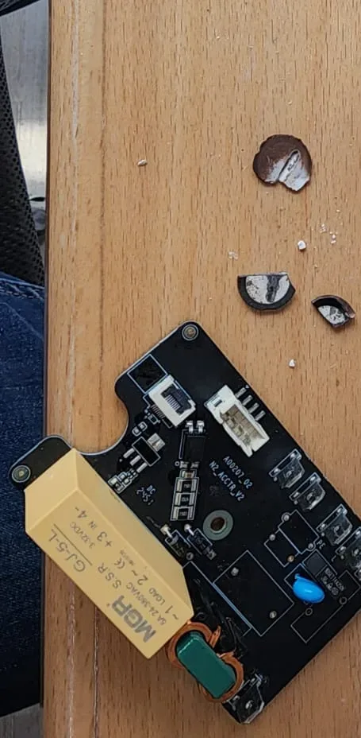
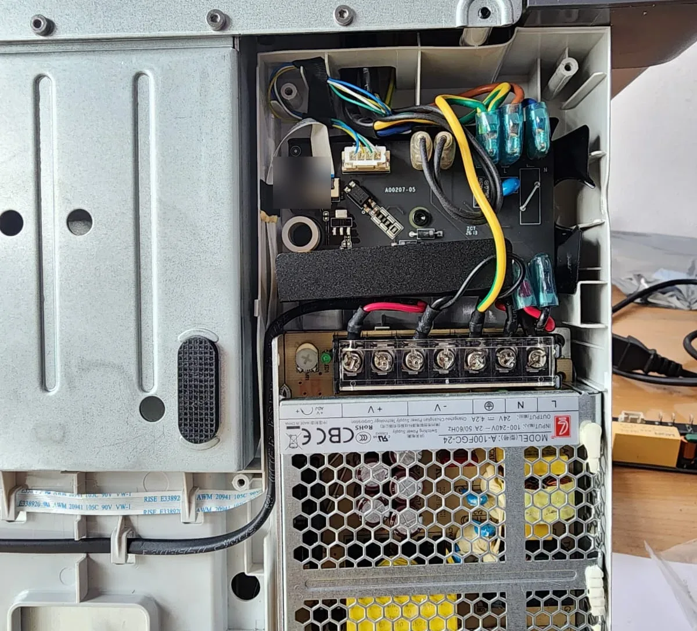
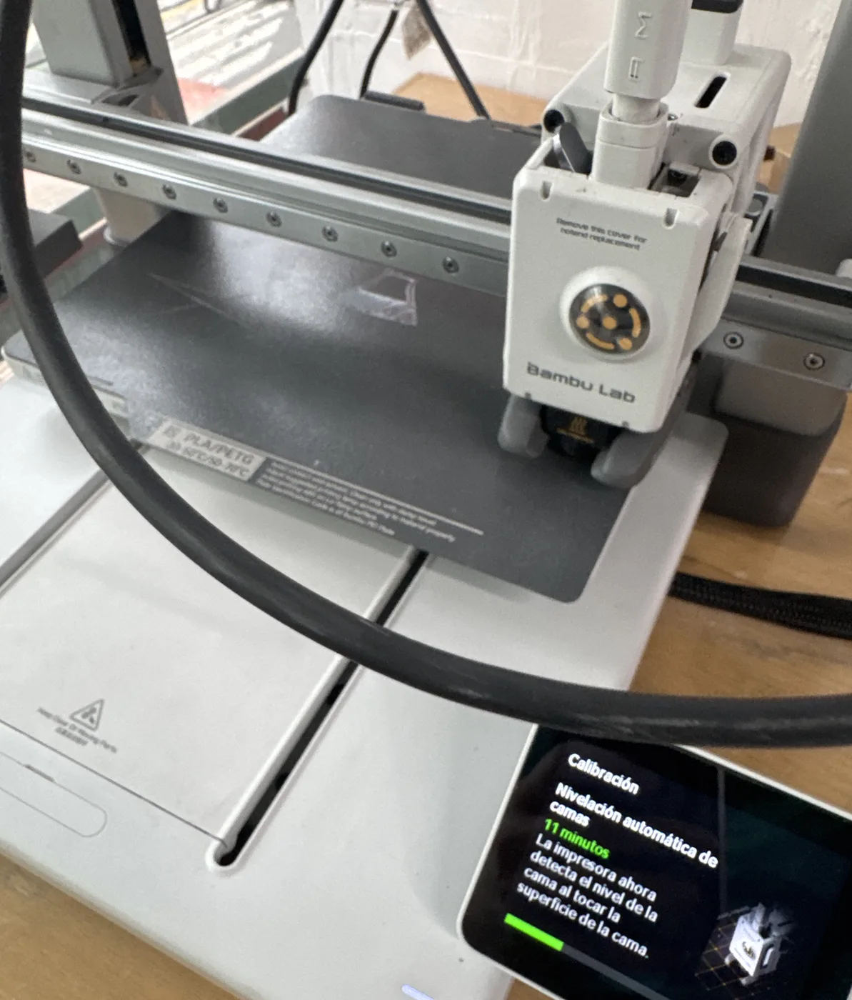
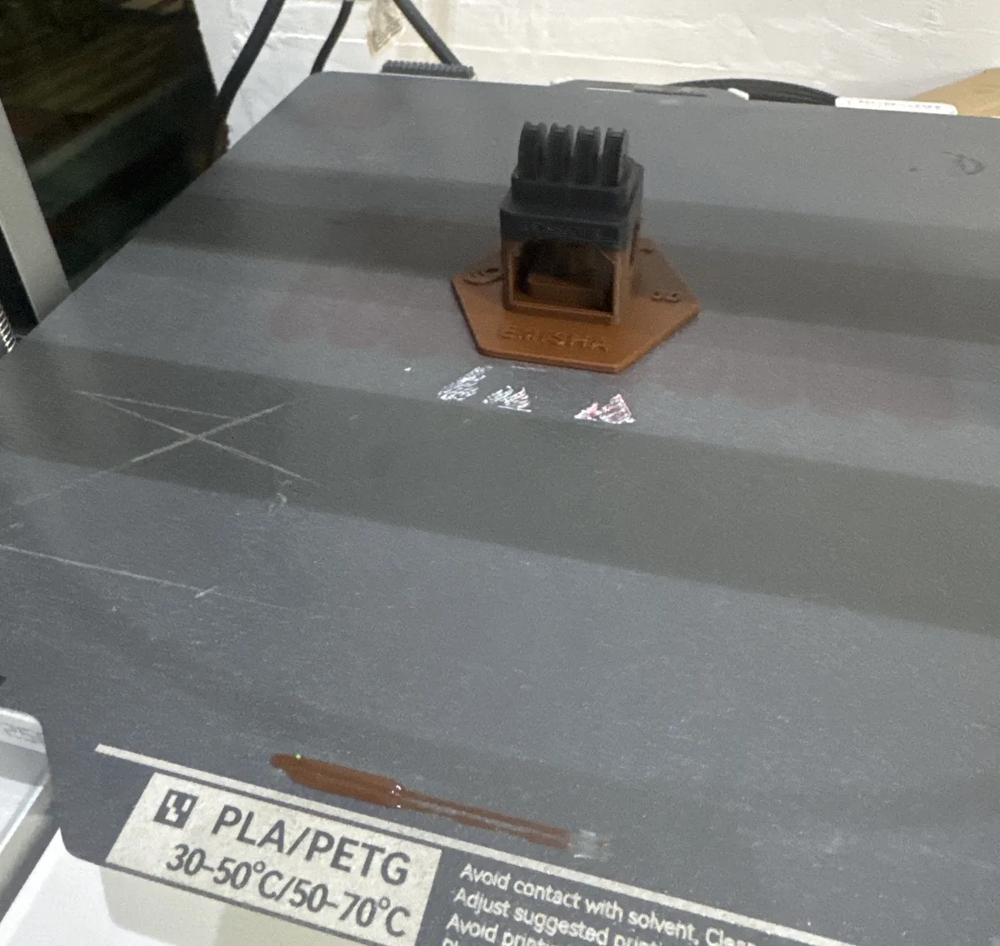

Bambu Lab A1 prende pero no da imagen: la placa de CA quemada
· Caso del taller
La conectas, la enciendes y nada. La pantalla se queda negra y no se oye ni el ventilador. Así nos llegó esta A1. El problema no estaba en la pantalla ni en el firmware: un capacitor de la placa de CA, la que recibe la corriente de la pared, había reventado. Te contamos qué encontramos, qué cambiamos y qué puedes revisar tú sin abrir nada.

Lo que veía el dueño
La impresora no daba ninguna señal. Ni la pantalla encendía ni se escuchaba el arranque de los motores o del ventilador. Cuando una A1 hace eso, la gente suele pensar primero en la pantalla, en el cable plano que la conecta o en una actualización que salió mal. Son sospechas razonables, pero si no se oye nada, lo más probable es que la corriente ni siquiera esté llegando a la electrónica.
Lo que encontramos al abrir la base
La A1 tiene la parte eléctrica en la base. Ahí viven dos piezas: la fuente que convierte la corriente de la pared en 24 V y, antes de ella, la placa de CA, que recibe la corriente del contacto, la filtra y la reparte. Al quitar la tapa y revisar la placa de CA encontramos un capacitor quemado, literalmente reventado. Al sacar la placa salieron los pedazos del componente.
Con ese capacitor abierto, la placa ya no deja pasar la corriente hacia la fuente y la impresora se queda muerta. Es una falla que conocemos bien en la A1 y que se repite: la placa de CA es de las piezas que más vemos dañadas en este modelo.

Lo que hicimos
Cambiamos la placa de CA completa por una nueva para A1. En el camino nos topamos con un tornillo barrido en la base, algo que pasa seguido cuando un equipo ya se abrió antes con la herramienta equivocada. Con la placa nueva en su lugar, revisamos las conexiones de fase, neutro y tierra hacia la fuente y cerramos.
Después de encenderla corrimos la calibración completa: ruido de motores y nivelación automática de la cama. Al final hicimos impresiones de prueba para confirmar que la impresora quedara trabajando normal, no nada más encendiendo.



Lo que puedes revisar tú, sin abrirla
- Prueba otro contacto. Parece obvio, pero un contacto flojo o una extensión dañada dan exactamente el mismo síntoma.
- Revisa el cable de corriente. Que entre firme en la impresora y que no esté pelado ni doblado. Si tienes otro cable compatible, pruébalo.
- Revisa el interruptor. Que esté en encendido y que no se sienta suelto.
- Huele la base. Si huele a quemado o viste un chispazo o un tronido al conectarla, desconéctala y no la vuelvas a encender. Eso ya es taller.
- Protege la impresora. Un supresor de picos o un regulador entre la pared y la impresora ayuda contra variaciones de voltaje, sobre todo si se te va la luz seguido.
Cuándo llevarla al taller
Si probaste otro contacto y otro cable y la A1 sigue sin dar ninguna señal, la falla está adentro: placa de CA, fuente o la conexión entre ellas. Ahí ya no conviene seguirle en casa. Se trabaja con corriente de la pared y un error puede dañar la fuente o la tarjeta principal, que son piezas más caras.
En el taller revisamos la placa y la fuente con multímetro, te mandamos fotos de lo que encontramos y la cotización antes de cambiar cualquier pieza. Si quieres ver más causas de este síntoma, en Bambu Lab no enciende tenemos la lista completa.
Sigue leyendo
¿Tu impresora tiene algo parecido?
Diagnóstico en el taller con fotos de lo que encontramos y la cotización antes de cambiar cualquier pieza. Recibimos impresoras de todo México por paquetería.